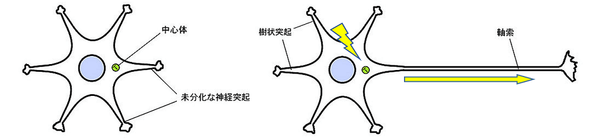

脳の長距離伸長戦略
なぜ前頭葉は額にあるか，考えたことはあるだろうか．視覚野は頭の後ろ，言語野は耳の近く，運動野と感覚野は頭の上にある．それぞれ，目から，耳から，身体から，最も遠い所に位置していることがわかる．前頭葉から最も遠いのは，首である．判断するときには首を振るのだから．鼻や口は領野までの距離が短いが，嗅覚や味覚は化学的環境が必要なので，胎内でも重要な目や耳や身体に比べて，後から発達する器官であると考えることができる．
軸索は中心体を付け根として伸びる．光やイオンなど，電磁的刺激を受けると中心体で電流が生まれ，イオンを押し出す．これが神経伝達である．ニューロンは光やイオンがある限り伸び続ける．年老いると記憶を思い出すのに時間がかかったり，話が長くなったり，性格が穏やかで円くなったりするが，これらはニューロンが長くなったせいである．
なぜ生命は大きくなったか．より多く興奮するためである．興奮運動はイオンがたくさんたまり重くなるために起こる．いまはそれ以上ためられないから興奮する．細胞がイオンをたくさんためられるようになると，容易に興奮しなくなる．言語を使う動物ほど脳が大きいのは，感覚や運動を受けなくても多く興奮できるからだ．興奮を長くしようとするから神経が伸び，身体が伸び，脳が長くなる．興奮した分だけ長くなる．
イオンは移動するので，イオンの運動エネルギーを放散する仕組みが必要になる．また，脳には糖分が集まるので，エネルギーを発散しなければならなくなる．そこで，ニューロンを遠くまで伸ばすことで，身体を冷やし，周辺器官で生化学反応を進めさせる．イオンが移動すると，電流が生じるが，そのとき信号が混線しないように，軸索は電気を通しにくい脂肪で覆われている．脂肪なら，水よりも温まりやすく冷めやすいので，信号物質の移動による熱を放散しやすい．熱や光の情報を削除するために，すなわち興奮を持続させないために，伝達にエネルギーを使う．伝達するほど温度が下がり，落ち着けるのだ．
神さまはこのように脳に興奮を忘れる機能をつくりたもうた．興奮をひとりの脳で続けるだけでなく，他の脳にも喜びを伝えるためにそうなさったとも思える．お世話になった人たちに喜びや感謝を伝えられたか，神さまのもとで一年を振り返る時としたい．